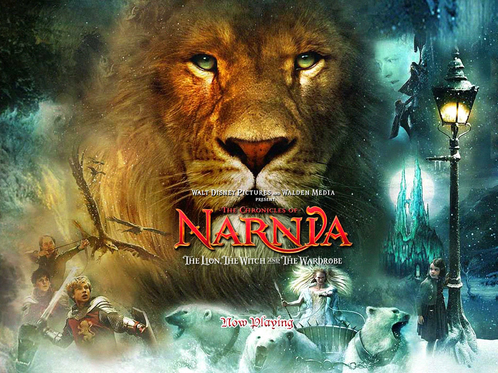
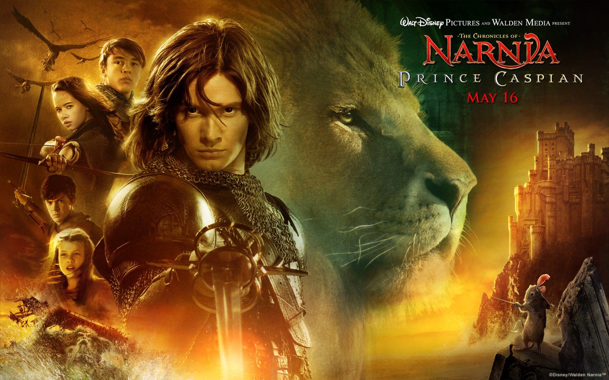
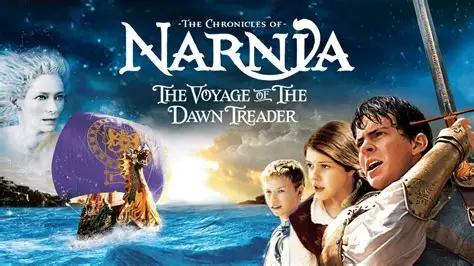

Welcome to the World of Narnia
Step through the wardrobe and enter the magical world of Narnia, a land filled with talking animals, ancient prophecies, epic battles, and unforgettable adventures. Created by C.S. Lewis, The Chronicles of Narnia is a timeless series that follows children from our world as they discover courage, friendship, and their true purpose in a realm where good and evil collide. From the frozen reign of the White Witch to journeys across the Eastern Sea, each story invites readers and viewers to experience wonder, danger, and hope. This website is your guide to the books, films, characters, and hidden meanings within Narnia. Whether you are a longtime fan or a first-time visitor, prepare to explore a world where magic is real and bravery changes everything. let the adventure begin!
The lion the witch and the wordrob.
This was this first in the series to be made into a movie by Disney. The Lion the Witch and the Wordrobe made $745 million at the worldwide box office. With a production buget of $180 million that is a profit of $565 million. I can see why Disney decided produce another from the series.
Prince Caspian
Riding on the success of the first movie, Disney produced the sequel Prince Caspian which hit theaters in 2008. Prince Caspian had a buget of $225 million and ended its theatrical run with $420 million worldwide leaving them with a smaller profit of $195 million. The sequel did not match the first films success, but disney still continued production on the next movie.
The Voyage of the Dawn Treader
This was the last movie in the book series Disney decided to produce in 2010 for a number of reasons. The budget for this movie was $145 million and made $415.7 million at the box office. This gave them a profit of $270.7 million which was an improvement from the previous movie but ultimately, disney decided to pause the series here.